Dawn & Sea
Explore more, discover more
dawn & sea est un site web de recommandation de tourisme en Algérie
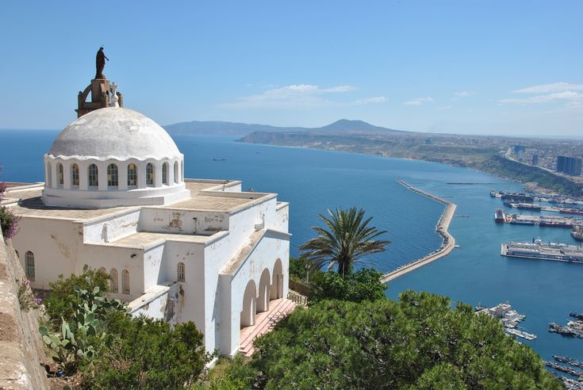
ORAN
Oran est une ville portuaire au nord-ouest de l'Algérie. Elle est considérée comme le berceau de la musique raï. Le fort de Santa Cruz, une citadelle ottomane reconstruite par les Espagnols, se trouve au sommet du mont Murdjadjo ; il offre une vue sur la baie en contrebas.
See Details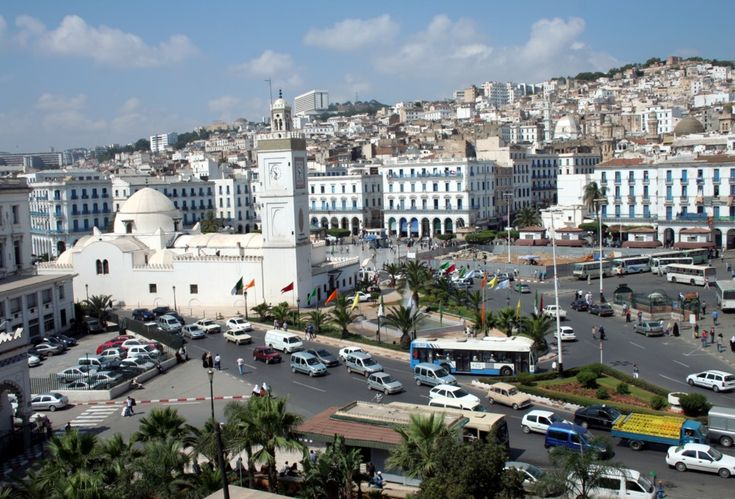
ALGER
Alger est la capitale de l'Algérie. Elle se trouve sur la côte méditerranéenne. Elle est connue pour les bâtiments blanchis à la chaux de la Casbah, une médina dotée de rues escarpées et sinueuses, de palais ottomans.
See Details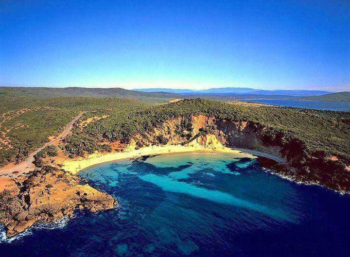
ANNABA
Annaba est une ville portuaire au nord-est de l'Algérie. Sur le cours de la Révolution, la rue principale dotée d'une vaste promenade centrale, l'architecture reflète le passé colonial français de la ville.
See Details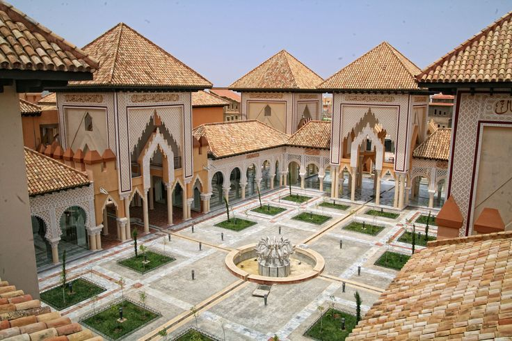
TLEMCEN
Tlemcen est une ville située au nord de l'Algérie. Elle est célèbre pour ses bâtiments mauresques, tels que la Grande Mosquée du XIe siècle avec son haut minaret et son mihrab élaboré.
See Details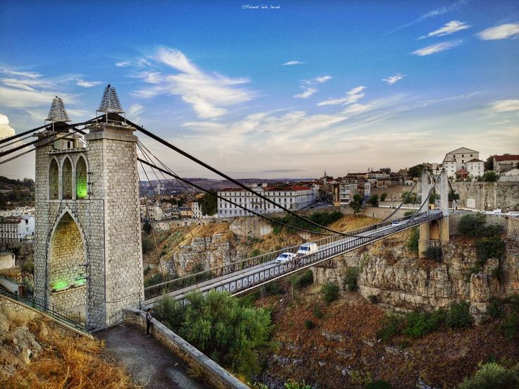
CONSTANTINE
Constantine est une commune du nord-est de l'Algérie, chef-lieu de la wilaya de Constantine. Elle est la capitale de l'Est de l'Algérie. Ses ponts suspendus en font sa renommée mondiale.
See Details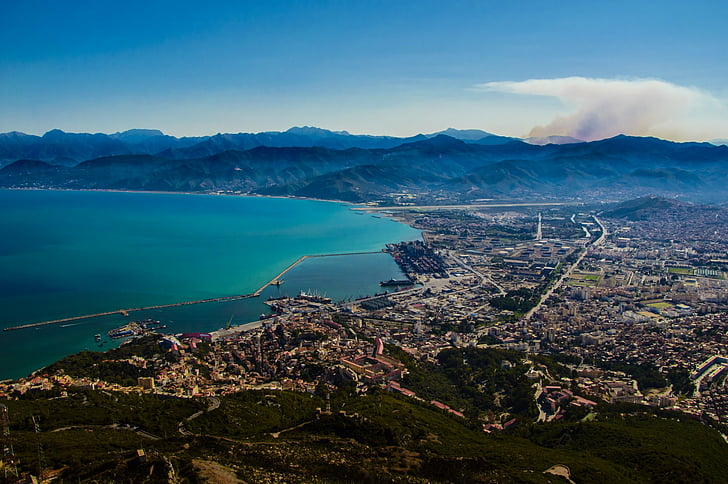
BEJAIA
Béjaïa, Bougie pendant la période coloniale française, est une commune algérienne située en bordure de la mer Méditerranée, en Kabylie. Le site est peuplé depuis le paléolithique.
See Details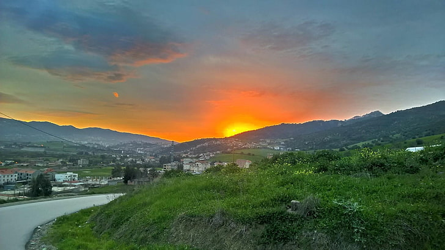
TIZI-OUZOU
Tizi Ouzou est une commune algérienne située à 30 km au sud des côtes méditerranéennes et à 100 km à l'est de la capitale Alger, en Kabylie.
See Details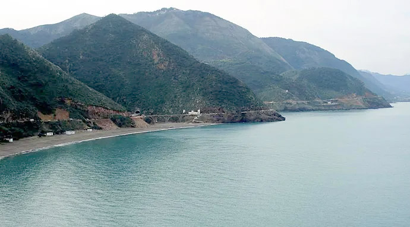
JIJEL
Jijel est une ville et commune d'Algérie de la wilaya de Jijel située à l'est de la Petite Kabylie, dont elle est le chef-lieu, réputée pour ses plages magnifiques.
See Details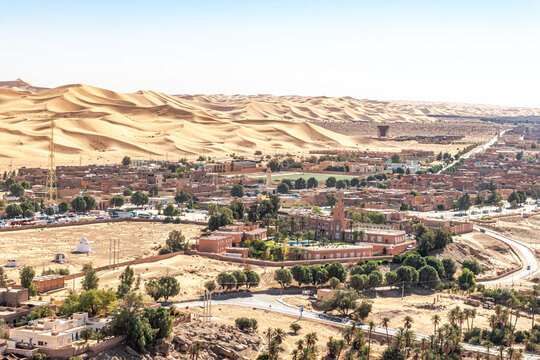
BECHAR
Béchar, anciennement Colomb-Béchar, est une commune de la wilaya de Béchar, en Algérie, située dans le Sahara au sud-ouest de la capitale Alger.
See DetailsTAMANRASSET
Tamanrasset est une commune de la wilaya homonyme, située dans le grand Sud algérien, au cœur du massif du Hoggar. C'est la capitale des Touaregs algériens.
See Details.jpg)
ADRAR
Adrar est une commune de la wilaya homonyme, située dans le sud-ouest de l'Algérie, réputée pour ses foggaras et son architecture rouge traditionnelle.
See Details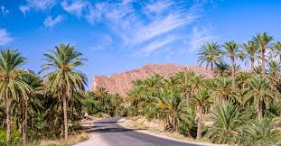
BISKRA
Biskra est la "reine des Zibans", premier pôle urbain saharien, réputée pour ses palmeraies et la qualité exceptionnelle de ses dattes Deglet Nour.
See DetailsSOME PICTURES ABOUT ALGERIA

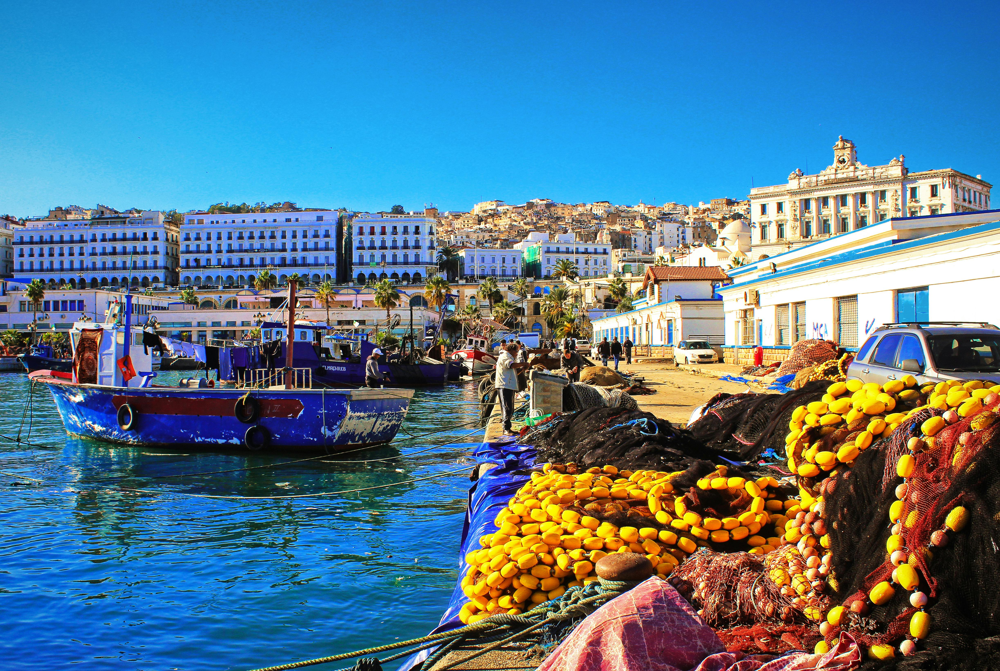
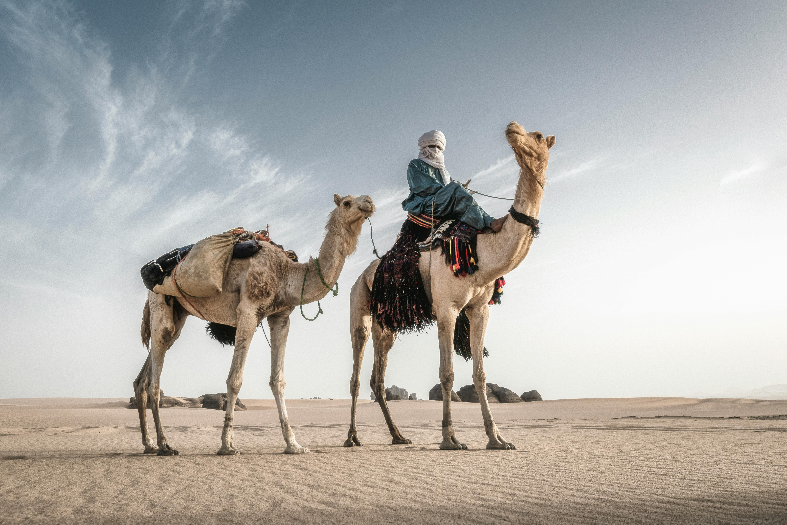
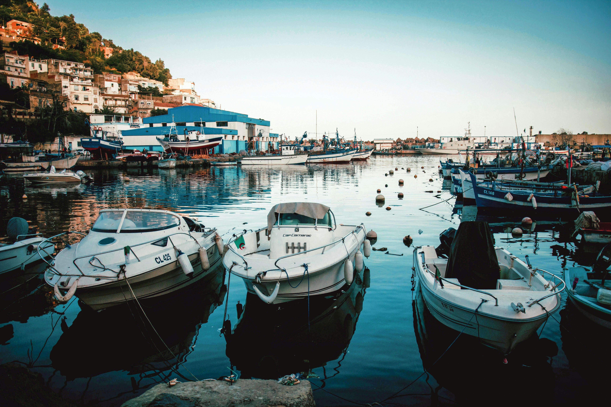